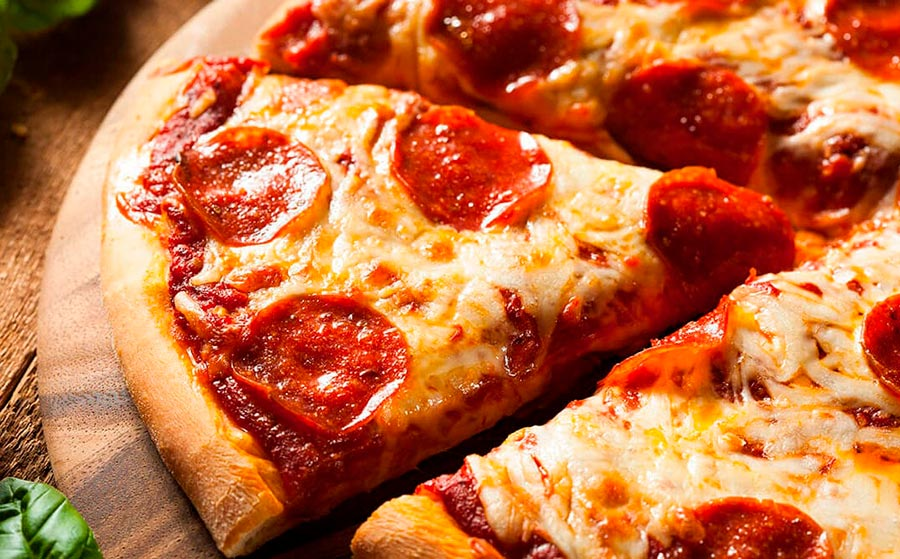

Pizza
Home

Description
This simple homemade pizza has a crisp, chewy crust, a bright tomato sauce, and a generous layer of melted mozzarella. Add fresh basil after baking for a fragrant finish.
Ingredients
- 300 g bread flour, plus extra for dusting
- 200 ml warm water
- 1 teaspoon instant yeast
- 1 teaspoon sugar
- 1 teaspoon salt
- 1 tablespoon olive oil
- 120 ml pizza or tomato sauce
- 200 g shredded mozzarella
- Fresh basil leaves
Steps
- Combine the warm water, yeast, and sugar. Let stand for 5 minutes.
- Mix the flour and salt in a bowl. Add the yeast mixture and olive oil, then knead for about 8 minutes until smooth.
- Cover the dough and let it rise in a warm place until doubled, about 1 hour.
- Heat the oven to 240°C (475°F). Stretch the dough into a round on a lightly floured surface.
- Spread the sauce over the dough, leaving a small border, and scatter the mozzarella on top.
- Bake on a hot tray for 10–14 minutes, until the crust is browned and the cheese bubbles. Finish with basil and serve.